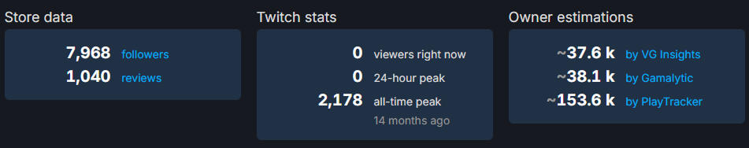

In Week 2 our course was beginning to pick up pace. We explored more features within Blender that I hadn’t used before, such as rendering and lighting. The image you can see continues from last week where I added an eye and wing but kept the main shape — it started to look like a seagull, which I thought was a cool idea.
What’s new
- made a lighting room
- lighting using a sun
- coloured in the duck
- added eyes and wings
Method used (lighting room)
- add a cube
- delete 3 faces of the cube (left, right, top)
- bevelled the edge between back and floor face
Settings used (sun)
- colour #B6E6FF
- strength 3.5
- angle 90
- location (12, 3, 9)
- rotation (415, 47, 385)
For the seagull colour I only changed the base colour as I am not familiar with Blender’s material graph. However, I will need to use it later to texture my models and improve their look instead of flat shading.
Colour codes
- #FFFFFFFF
- #FF9000FF
- #000000FF
Method used (wings)
- extruded the middle face of the body on the side view
Method used (eyes)
- selected a face on the head for eye placement
- Shift + S → cursor to selected (spawn point)
- Shift + A → add a circle (16 sides for low poly look)
This is all we did in Blender this week and I was proud of what I achieved. I touched on elements I had never tried before. I would not flat shade the seagull next time and would choose better colours — this will improve as I learn Blender’s material graph.
We were also introduced to Adobe Premiere Pro. We learned about types of camera shots and their effects in storytelling.
Camera shots
- Wide shot — shows both world and characters head-to-toe, capturing interactions.
- Close-up shot — focuses on part of a character for intensity.
- Long shot — similar to full shot but emphasizes environment over characters.
- Extreme close-up — very close, creating tension or fear.
Camera angles
- Wide shot — shows both world and characters head-to-toe, capturing interactions.
- Close-up shot — focuses on part of a character for intensity.
- Long shot — similar to full shot but emphasizes environment over characters.
- Extreme close-up — very close, creating tension or fear.
Camera movements
- Wide shot — shows both world and characters head-to-toe, capturing interactions.
- Close-up shot — focuses on part of a character for intensity.
- Long shot — similar to full shot but emphasizes environment over characters.
- Extreme close-up — very close, creating tension or fear.